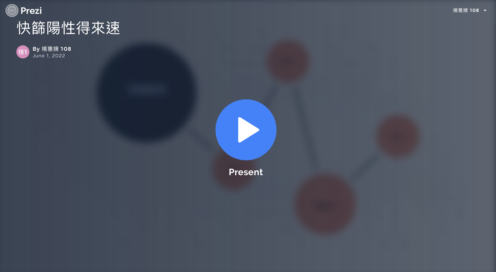
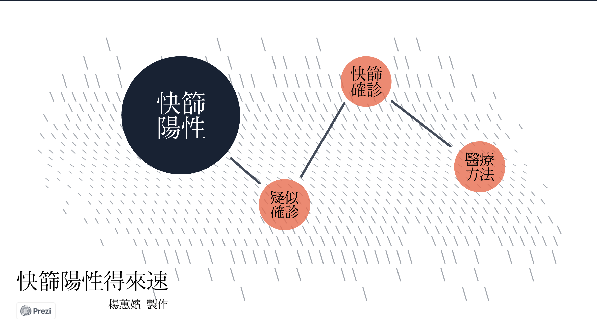

作品集
課程名稱：數位敘事實作與應用
學號：410854065
系級：大傳三A
姓名：楊蕙嬪
指導老師：王錦裕老師
目 錄
台中市景點網頁設計
https://huipin1053327.github.io/taichung2/
個人資訊網
https://huipin1053327.github.io/presonal-profile/
地圖敘事(使用GoogleMyMap)
https://huipin1053327.github.io/taichung-/
圖表敘事-SVG實作(使用RawGraph)
https://huipin1053327.github.io/stock-price-trend2/
圖表敘事-LineChart實作(使用HighCharts)
https://huipin1053327.github.io/inbound/
圖表敘事-PieChart實作(使用HighCharts)
https://huipin1053327.github.io/-/
故事地圖實作(使用KnightLab)
https://huipin1053327.github.io/taiwan/
虛擬實境實作(使用Krpano)
https://www1.pu.edu.tw/~s1085406/vtour/tour.html
互動式魚骨圖實作(使用amCharts)
https://huipin1053327.github.io/timeline/
互動簡報製作(使用Prezi)
https://prezi.com/view/gMhDY6aPo4PWeRnp7Prf/
動畫影片製作(使用Powtoon)
https://www.powtoon.com/online-presentation/bY3U7bAJtGe/?utm_medium=social-share&utm_campaign=studio+share&utm_source=copy+link&utm_content=bY3U7bAJtGe&utm_po=42108427&mode=movie
台中市景點網頁設計
進入作品
個人資訊網
進入作品
地圖敘事(使用GoogleMyMap)
進入作品
圖表敘事-SVG實作(使用RawGraph)
進入作品
圖表敘事-LineChart實作(使用HighCharts)
進入作品
圖表敘事-PieChart實作(使用HighCharts)
進入作品
故事地圖實作(使用KnightLab)
進入作品
虛擬實境實作(使用Krpano)
進入作品
互動式魚骨圖實作(使用amCharts)
進入作品
互動簡報製作(使用Prezi)
進入作品


動畫影片製作(使用Powtoon)
進入作品